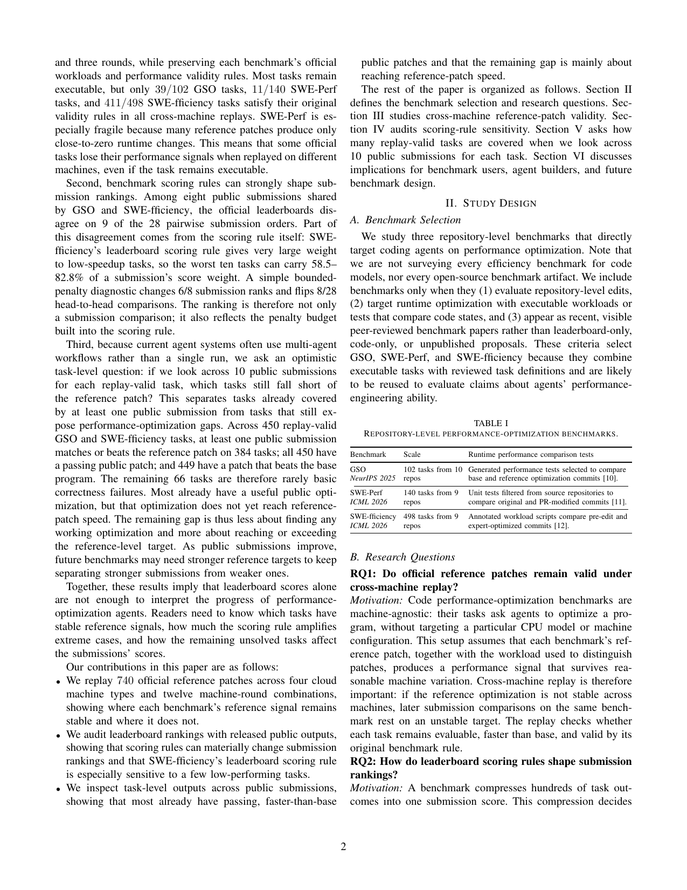
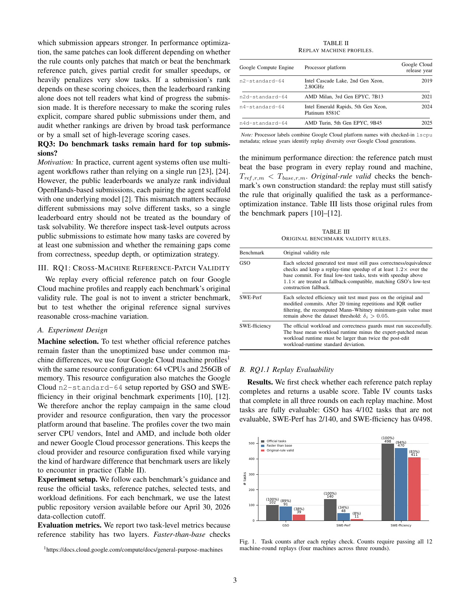
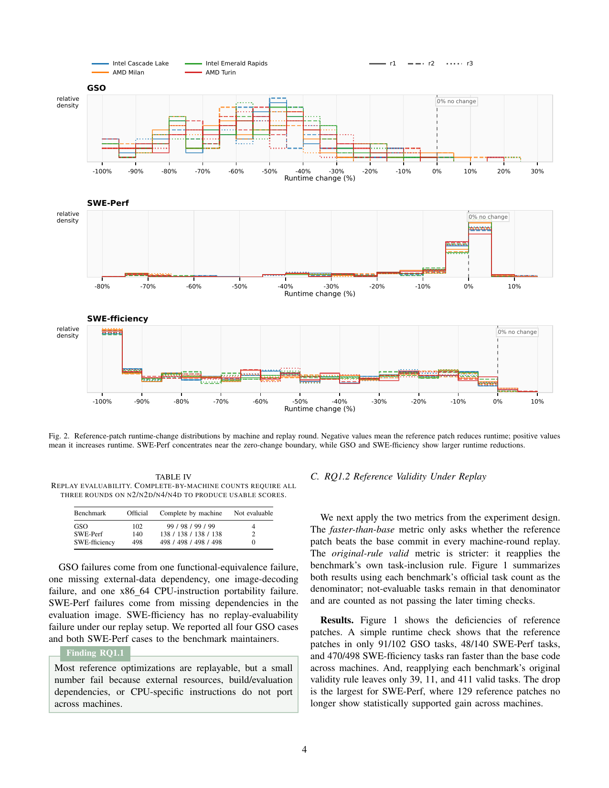
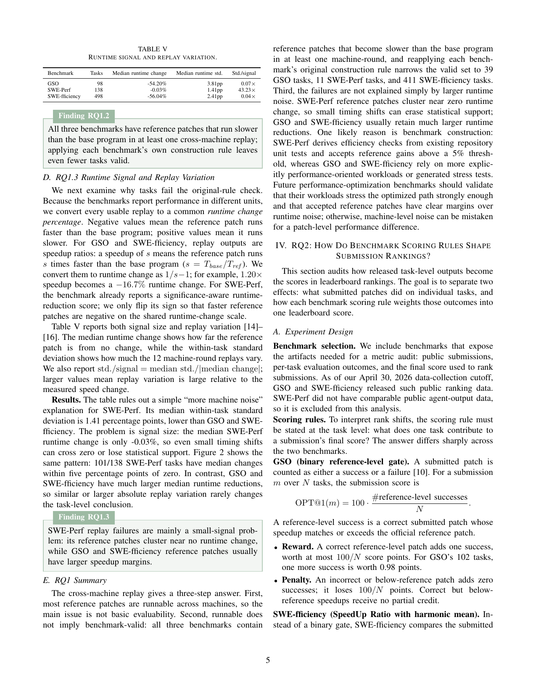
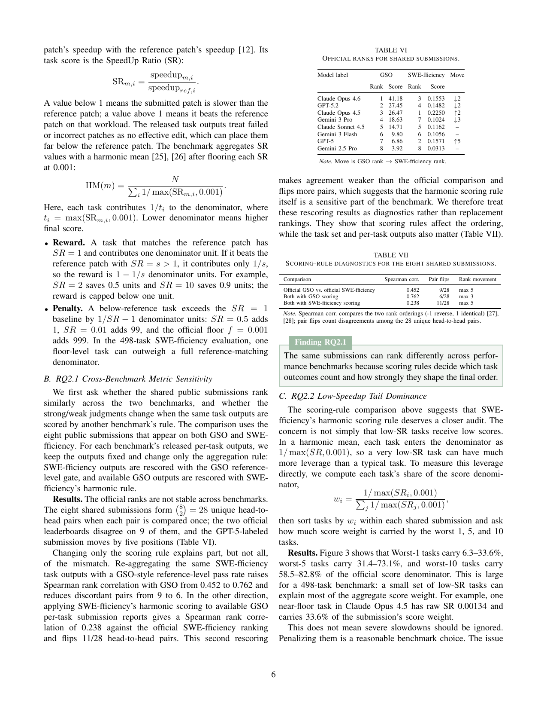
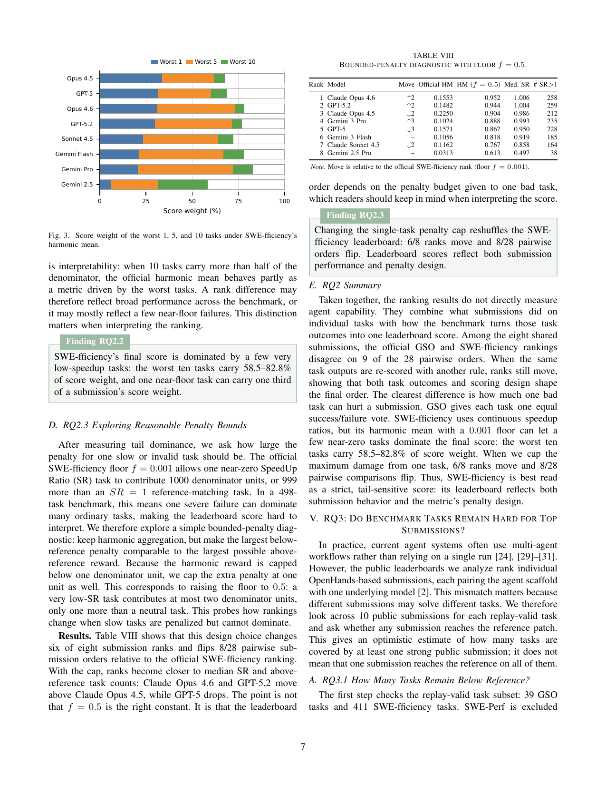
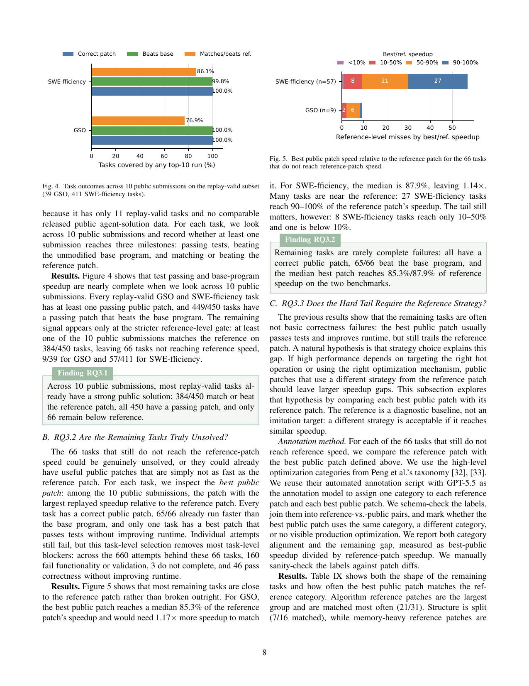
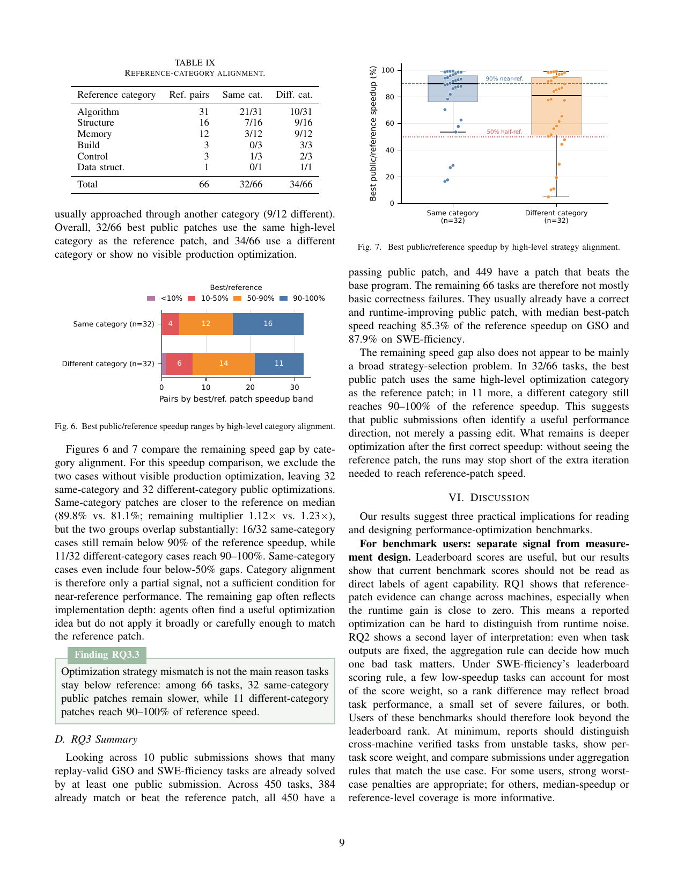

生成日期：2026-07-02（周四）｜信息截止时间：2026-07-02 16:45 CST (UTC+8)｜覆盖：Agent benchmark、coding agent 评测可信度、GitHub 增长、高 Star 未总结项目、OpenAI / Anthropic 官方动态
选择原因：这篇 2026-07-01 新论文直接审计 repository-level 性能优化 benchmark 是否可靠测量 coding agents。它不是又发布一个新榜单，而是拆解 GSO、SWE-Perf、SWE-fficiency 的重放稳定性、计分规则敏感性和任务剩余难度，是今天对 agent benchmark 可信度最有价值的信号。
作者：Zhi Chen、Zhensu Sun、Yuling Shi、David Lo、Lingxiao Jiang。发布日期：2026-07-01。链接：arXiv 摘要、PDF。代码/项目页：论文正文与 arXiv 元数据未发现独立代码仓库链接；相关 benchmark 原始仓库/公开提交来自论文引用的 GSO、SWE-Perf、SWE-fficiency。
This paper audits whether repository-level performance-optimization benchmarks actually provide stable evidence about coding-agent progress. Instead of accepting leaderboard scores at face value, it replays official reference patches for 740 optimization tasks across four Google Cloud machine profiles and multiple rounds, then re-computes validity, scoring sensitivity, and remaining task difficulty. The core finding is uncomfortable but useful: many tasks remain executable, yet their reference optimization signal is not always stable across machines; only 39/102 GSO tasks, 11/140 SWE-Perf tasks, and 411/498 SWE-fficiency tasks satisfy the original benchmark validity rules in every replay. The paper also shows that leaderboard rankings can change materially under different scoring rules, and that many tasks already have at least one public submission beating the base program, so the remaining challenge is often matching or exceeding expert reference speed rather than producing any working optimization. Its limitation is that the audit covers three specific benchmark families and available public submissions, not all performance-engineering agent settings.
这篇论文审查 repository-level 性能优化 benchmark 是否真的能稳定证明 coding agent 的进步。它没有直接接受排行榜分数，而是把 740 个优化任务的官方 reference patch 放到四类 Google Cloud 机器和多轮重放中，重新计算有效性、计分规则敏感性和任务剩余难度。核心结论有点刺耳但很有用：很多任务仍然能运行，但 reference 优化信号并不总能跨机器稳定成立；只有 39/102 个 GSO 任务、11/140 个 SWE-Perf 任务和 411/498 个 SWE-fficiency 任务在所有重放中都满足原始 benchmark 的有效性规则。论文还指出，不同计分规则会显著改变排行榜排序；而很多任务已经至少有一个公开提交能跑赢 base program，因此剩余挑战往往不是“能否产出可运行优化”，而是能否达到或超过专家 reference patch 的速度。局限在于：审计覆盖的是三个具体 benchmark 家族和已公开提交，不代表所有性能工程 agent 场景。
PDF 共有 Figure 1-7 与 Table I-IX。由于表格与图在双栏 PDF 中混排，且手工转写容易引入数值错误，本简报按论文顺序嵌入相关页面渲染截图，覆盖全部公开可访问图表。








排名方法：使用 2026-06-29 简报中记录的当前 star 快照作为历史基线，与 2026-07-02 16:38 CST GitHub REST API 当前值相减。窗口约 73.8 小时，接近三日但不是秒级滚动 72 小时；下表按该可核验差分排序。候选集为历史日报连续跟踪的 AI/Agent、Agent Skill、coding agent 与 agent 工具链项目。
| # | 项目 | 用途简介 | 语言 | 最近更新 | 当前 stars | 6/29 快照 | 约 73.8h 新增 |
|---|---|---|---|---|---|---|---|
| 1 | obra/superpowers | An agentic skills framework & software development methodology that works. | Shell | 07-02 08:37 UTC | 243,804 | 240,906 | +2,898 |
| 2 | NousResearch/hermes-agent | The agent that grows with you | Python | 07-02 08:37 UTC | 207,559 | 205,184 | +2,375 |
| 3 | multica-ai/andrej-karpathy-skills | A single CLAUDE.md file to improve Claude Code behavior, derived from Andrej Karpathy's observations on LLM coding pitfalls. | 未标明 | 07-02 08:38 UTC | 186,327 | 184,185 | +2,142 |
| 4 | firecrawl/firecrawl | The API to search, scrape, and interact with the web at scale. 🔥 | TypeScript | 07-02 08:32 UTC | 142,920 | 140,982 | +1,938 |
| 5 | farion1231/cc-switch | A cross-platform desktop All-in-One assistant for Claude Code, Codex, OpenCode, OpenClaw, Gemini CLI & Hermes Agent. Only official website: ccswitch.io | Rust | 07-02 08:38 UTC | 112,131 | 110,198 | +1,933 |
排除规则：执行前检查当前线程历史与 /Users/wuyuyang/Documents/Rhythm/morning-brief*.html，不仅排除已入榜项目，也排除此前 GitHub 板块或来源快照中出现过的仓库。因此 2026-06-29 来源快照中出现过但未正式入榜的 lobehub/lobehub、bytedance/deer-flow、nexu-io/open-design、FoundationAgents/MetaGPT、ComposioHQ/awesome-claude-skills 也被排除。
| # | 项目 | 语言 | 最近更新 | 当前 stars | 用途与核心能力 | 为什么值得关注 |
|---|---|---|---|---|---|---|
| 1 | shareAI-lab/learn-claude-code | Python | 07-02 08:35 UTC | 69,548 | Bash is all you need - A nano claude code–like 「agent harness」, built from 0 to 1 | 把 Claude Code 类 agent harness 拆成可学习、可改造的 Bash/脚本化范式，适合观察轻量 coding-agent 运行时如何被社区复刻。 |
| 2 | FlowiseAI/Flowise | TypeScript | 07-02 07:58 UTC | 54,189 | Build AI Agents, Visually | 低代码 AI agent / workflow builder，把工具编排、RAG、模型接入与可视化调试打包成团队可用界面。 |
| 3 | run-llama/llama_index | Python | 07-02 07:37 UTC | 50,584 | LlamaIndex is the leading document agent and OCR platform | 围绕文档、检索、OCR 与 agent 工作流的数据层，常被用作 agent 记忆、知识接入和 RAG 编排基础。 |
| 4 | agno-agi/agno | Python | 07-02 07:34 UTC | 40,956 | Build, run, and manage agent platforms. | 面向生产 agent 平台的运行、管理和部署框架，强调多 agent、工具、知识和监控的一体化。 |
| 5 | langchain-ai/langgraph | Python | 07-02 08:02 UTC | 36,283 | Build resilient agents. | LangChain 生态里的有状态 agent 图运行时，适合构建可恢复、可控、可观察的多步 agent。 |
检查窗口：自上一份日报 2026-06-29 14:49 CST 之后至 2026-07-02 16:45 CST。仅使用官方来源；未发现同期新的官方视频条目。
claude-sonnet-5。id_list=2607.01211。历史基线来自 2026-06-29 简报，当前值来自 2026-07-02 GitHub REST API。
| 仓库 | 2026-06-29 快照 | 2026-07-02 当前 | 差分 | 语言 |
|---|---|---|---|---|
| obra/superpowers | 240,906 | 243,804 | +2,898 | Shell |
| NousResearch/hermes-agent | 205,184 | 207,559 | +2,375 | Python |
| multica-ai/andrej-karpathy-skills | 184,185 | 186,327 | +2,142 | 未标明 |
| firecrawl/firecrawl | 140,982 | 142,920 | +1,938 | TypeScript |
| farion1231/cc-switch | 110,198 | 112,131 | +1,933 | Rust |
| affaan-m/ECC | 223,177 | 224,813 | +1,636 | JavaScript |
| anomalyco/opencode | 180,313 | 181,487 | +1,174 | TypeScript |
| anthropics/skills | 156,378 | 157,499 | +1,121 | Python |
| browser-use/browser-use | 101,246 | 102,093 | +847 | Python |
| anthropics/claude-code | 134,874 | 135,397 | +523 | Python |
| 候选仓库 | 当前 stars | 语言 | 处理 |
|---|---|---|---|
| lobehub/lobehub | 79,346 | TypeScript | 已排除：历史日报已出现 |
| bytedance/deer-flow | 75,835 | Python | 已排除：历史日报已出现 |
| nexu-io/open-design | 73,958 | TypeScript | 已排除：历史日报已出现 |
| FoundationAgents/MetaGPT | 69,142 | Python | 已排除：历史日报已出现 |
| ComposioHQ/awesome-claude-skills | 66,572 | Python | 已排除：历史日报已出现 |
| shareAI-lab/learn-claude-code | 69,548 | Python | 未出现；可入选/候补 |
| crewAIInc/crewAI | 54,748 | Python | 已排除：历史日报已出现 |
| FlowiseAI/Flowise | 54,189 | TypeScript | 未出现；可入选/候补 |
| run-llama/llama_index | 50,584 | Python | 未出现；可入选/候补 |
| agno-agi/agno | 40,956 | Python | 未出现；可入选/候补 |
| langchain-ai/langgraph | 36,283 | Python | 未出现；可入选/候补 |
| e2b-dev/awesome-ai-agents | 28,576 | 未标明 | 未出现；可入选/候补 |
| microsoft/semantic-kernel | 28,237 | C# | 未出现；可入选/候补 |
| camel-ai/camel | 17,314 | Python | 未出现；可入选/候补 |
shareAI-lab/learn-claude-code、FlowiseAI/Flowise、run-llama/llama_index、agno-agi/agno、langchain-ai/langgraph。